Économie régionale · 2015 · Canton de Fribourg, Broye, Berne et Bienne
Swiss Knowhow – Fribourg, Berne-Bienne et Tessin (mai 2015)
Édition de mai 2015 réunissant plusieurs cahiers régionaux. Le premier est consacré à Fribourg et à sa région : autorités de la ville et de Bulle, milieux économiques, hôpital, agglomération, puis publireportages d'entreprises fribourgeoises et broyardes. Le second présente Berne et Bienne avec la ville, le canton, l'université, l'Inselspital, des associations économiques et des entreprises. Les deux cahiers s'ouvrent sur l'entretien avec Kurt Fluri, président de l'Union des villes suisses. La partie consacrée au Tessin, annoncée par le titre du fichier et la couverture, n'apparaît pas dans le texte disponible.
Sommaire · 43 articles
 Interview
InterviewStadt Solothurn – « Solothurn schaut auf eine äusserst erfreuliche Dekade zurück »
Interview mit Nationalrat Kurt Fluri, Präsident Schweizerischer Städteverband SSV
 Interview
InterviewUn nouvel âge d'or pour la Ville
Entretien avec M. Pierre-Alain Clément, syndic de Fribourg

Accompagner la croissance démographique de Bulle
Interview d'Yves Menoud, syndic de la Ville de Bulle
InterviewDensifier la ville en lui conservant sa qualité de vie
Entretien avec M. Jean Bourgknecht, conseiller communal en charge de l'urbanisme et du génie civil
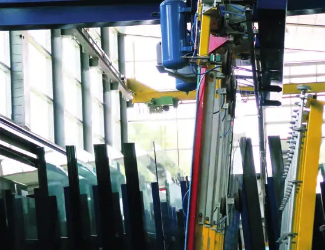
InterviewRenforcer l'attractivité économique de Fribourg
Interview de Chantal Robin, présidente du Groupement industriel du canton de Fribourg (GIF-VFI)
 Interview
InterviewMiser sur la fiscalité, l'innovation-formation et le foncier
Interview d'Alain Riedo, directeur de la Chambre de commerce et d'industrie Fribourg (CCIF)
InterviewAméliorer la mobilité, un enjeu majeur pour Fribourg
Entretien avec M. Thierry Steiert, conseiller communal en charge de la Police locale, de la Mobilité, des Sports et des Services industriels
InterviewDes finances qui se portent bien
Entretien avec Mme Madeleine Genoud-Page, conseillère communale en charge des finances et de la culture
 Interview
InterviewL'hôpital fribourgeois – Le patient au bon endroit, au bon moment
Entretien avec Mme Claudia Käch, directrice générale de l'hôpital fribourgeois
 Interview
InterviewL'Agglomération de Fribourg, une plus-value en matière d'aménagement régional et de mobilité
Interview de Corinne Margalhan-Ferrat, directrice de l'Agglomération de Fribourg
Promouvoir l'IT pour l'énergie et l'environnement
Interview de Christian Meixenberger, président du Cluster IT Valley
InterviewL'école au diapason du développement démographique
Entretien avec Mme Antoinette de Weck, conseillère communale en charge des écoles et de l'action sociale
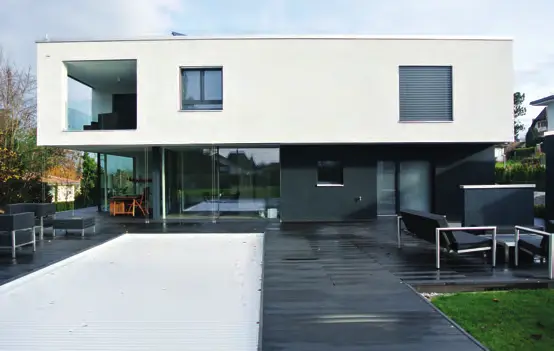
PublireportageBDL Architectes – Baumgartner, Diserens, Leroux
Bureau d'architectes à Avenches et Estavayer-le-Lac
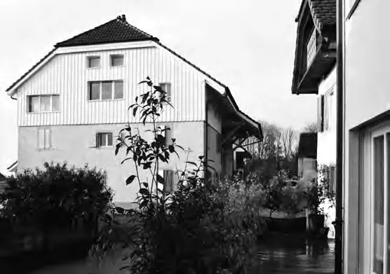
Publireportagechenevartarchitecte – Une architecture d'intégration
Atelier d'architecture et d'espaces bâtis à Fribourg
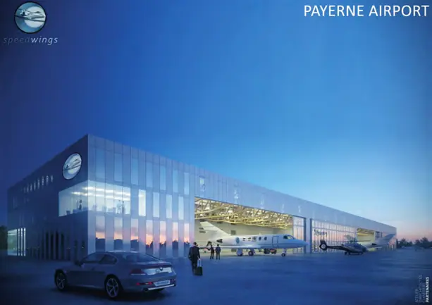
PublireportageLa Broye, dynamique et innovatrice – Au cœur de projets audacieux : la COREB
Entretien avec Pierre-André Arm, directeur de la Communauté régionale de la Broye
 Publireportage
PublireportageCSD Ingénieurs SA – Ingénieux par nature
Environnement, construction et énergie
 Publireportage
PublireportageFrigaz SA – Un fournisseur de solutions globales dans le domaine de l'énergie
Interview de Pascal Barras, directeur général (version allemande incluse)
 Publireportage
PublireportageGainerie Moderne SA – L'emballage sur-mesure au service du luxe
Emballages, présentoirs et agencements pour les marques de prestige
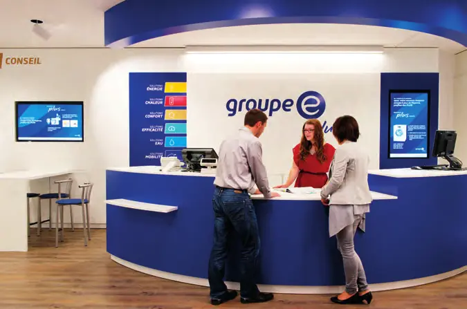
PublireportageGroupe E plus : une offre complète et un conseil de qualité
« Partageons plus que l'énergie » – Dominique Gachoud, directeur général (version allemande incluse)
 Publireportage
PublireportageEnergest Sàrl – Un cerveau pour les bâtiments
Gestion technique du bâtiment à Matran
 Publireportage
PublireportageG. Kolly SA – Un spécialiste reconnu
Véhicules utilitaires et systèmes de pesage (version allemande incluse)
 Publireportage
PublireportageImplenia – Le leader de la construction et des services de construction en Suisse
Implenia Buildings Fribourg
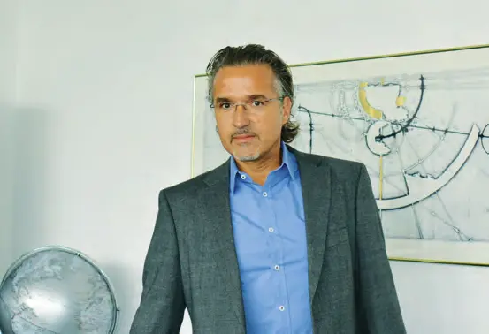
PublireportageLC Logiciels et Conseils SA – Spécialisé dans l'informatique de gestion
Rencontre avec Dominique Marmy, fondateur de la société
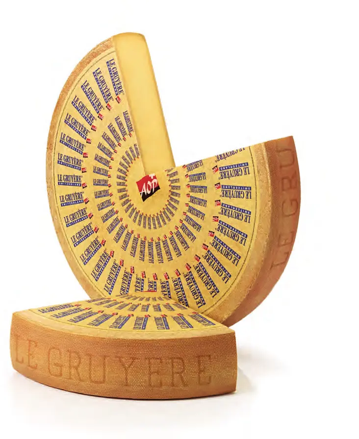
PublireportageL'Interprofession du Gruyère – Pour la défense du Gruyère AOP
Entretien avec M. Philippe Bardet, directeur
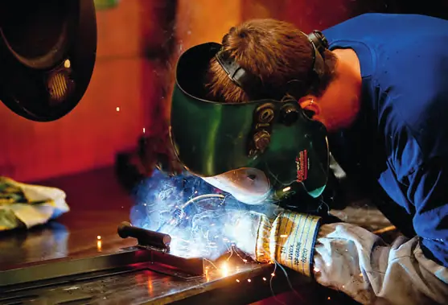
PublireportagePWP SA – Le spécialiste des pièces pour véhicules utilitaires
Composants de carrosserie à Payerne
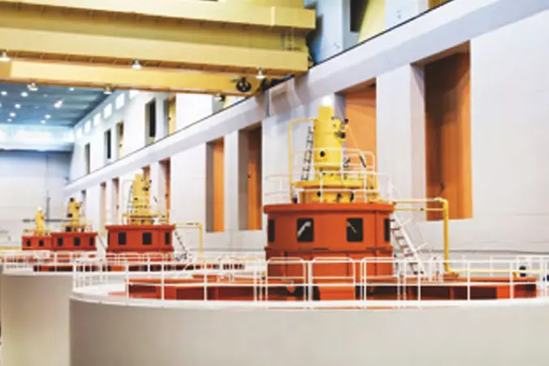
PublireportageMC-monitoring SA – Solution provider for rotating machines
Surveillance des machines tournantes
 Publireportage
PublireportageTransports publics fribourgeois – TPF
Interview de Vincent Ducrot, directeur général (version allemande incluse)
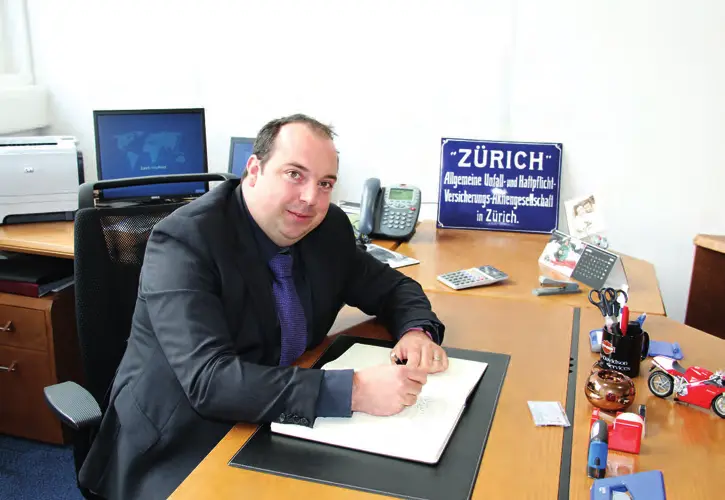
PublireportageZurich Assurances – L'expert en couverture de risques
L'agence fribourgeoise d'Alexandre Ducrot
 Interview
InterviewStadt Bern – Interview mit Stadtpräsident Alexander Tschäppät
« Bern erbringt als Hauptstadt sozusagen einen Service public für die ganze Schweiz »
Bienne en trois points forts
Interview du maire Erich Fehr

Kanton Bern – Interview mit Volkswirtschaftsdirektor Andreas Rickenbacher
« Punkto Innovation gehören unsere Unternehmen zur Weltspitze »

Des projets ambitieux pour une meilleure qualité de vie
Interview de Barbara Schwickert, directrice des travaux publics, de l'énergie et de l'environnement de la Ville de Bienne
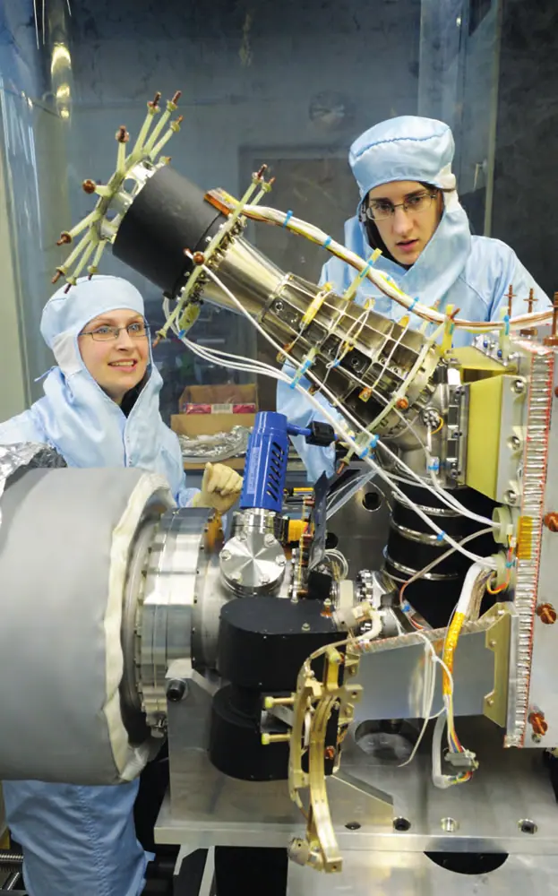
InterviewUniversität Bern – Interview mit Prof. Dr. Martin Täuber, Rektor
« Wir bekennen uns zur europäischen Tradition der Volluniversität »
 Interview
InterviewInselspital – Interview mit Holger Baumann, Vorsitzender der Geschäftsleitung
Fusion avec le Spital Netz Bern et masterplan 2060
 Interview
InterviewEMCH Aufzüge AG – Im Gespräch mit Geschäftsführer Bernhard Emch
« Unser Produkt verlangt Swiss Made und Swiss Know-how »
 Interview
InterviewDie Berner Arbeitgeber – Interview mit Uwe E. Jocham, Präsident
« Beschäftigungsfreundliche Rahmenbedingungen schaffen und sichern »
Rendre des services d'excellence aux entreprises
Interview de Thomas Gfeller, délégué à l'économie de la Ville de Bienne

Miser sur des pôles de développement stratégiques
Interview de François Kuonen, directeur du département de l'urbanisme de la Ville de Bienne
 Interview
InterviewDirektion für Bildung, Soziales und Sport der Stadt Bern – Interview mit Franziska Teuscher
« Wir sind nahe bei den Freuden und Sorgen der Stadtberner Bevölkerung »
TREUHAND|SUISSE – Im Gespräch mit Zentralpräsidentin Daniela Schneeberger
L'association suisse des fiduciaires

Une filière bilingue unique en Suisse
Interview de Cédric Némitz, directeur de la formation, de la culture et du sport de la Ville de Bienne
 Publireportage
PublireportageBERNMOBIL – « Die roten Trams und Busse sind zu einem Wahrzeichen der Stadt Bern geworden »
Interview mit Rolf Meyer, Leiter Unternehmenskommunikation (version anglaise incluse)
École Française de Berne – L'excellence pour tous
Entretien avec Gabriel Galice, président de l'École Française de Berne
Entreprises de ce numéro · 38
Agglomération de Fribourg
Collectivité régionale (aménagement et mobilité)
Baumgartner Diserens Leroux Architectes Sàrl (BDL)
Bureau d'architectes
BERNMOBIL
Transports publics urbains
Chambre de commerce et d'industrie Fribourg (CCIF) / Handels- und Industriekammer Freiburg
Chambre de commerce

chenevartarchitecte – atelier d’architecture et d’espaces bâtis
Bureau d’architecture
COREB – Communauté régionale de la Broye
Développement régional intercantonal
CPLG Concept Prestations Logistique Globale SA
Logistique

CSD Ingénieurs SA (CSD Holding AG)
Conseil en ingénierie et environnement
Die Berner Arbeitgeber – Verband der Arbeitgeber Region Bern (VAB)
Association patronale
École française de Berne (EFB)
École internationale
EMCH Aufzüge AG
Ascenseurs sur mesure

ENERGEST
Gestion technique et énergétique du bâtiment
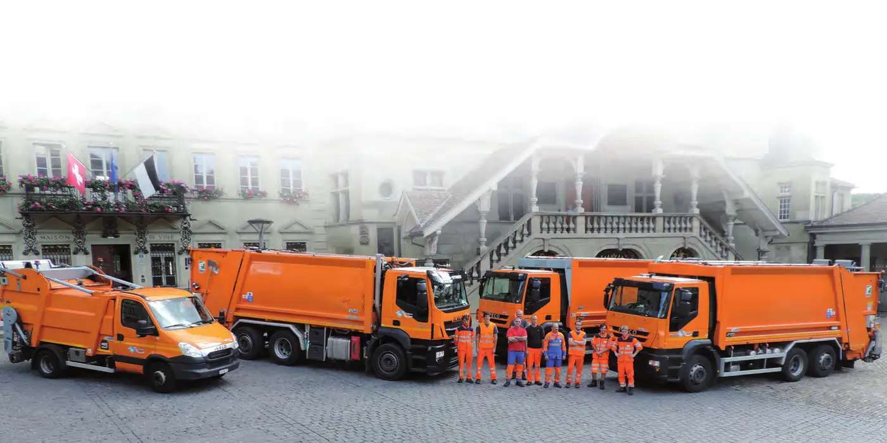
FARID (Suisse) SA
Équipements (véhicules de collecte)
Frigaz SA / Frigaz AG
Distribution de gaz naturel
Gainerie Moderne SA
Emballages et agencements pour le luxe
Garage G. Kolly SA
Véhicules utilitaires et systèmes de pesage

Groupe E
Entreprise générale de l’énergie
Groupement industriel du canton de Fribourg (GIF-VFI)
Association industrielle
HFR – Hôpital fribourgeois / freiburger spital
Hôpital public cantonal
Implenia Suisse SA (Buildings Fribourg)
Construction et entreprise générale
Inselspital Bern – Universitätsspital Bern
Hôpital universitaire
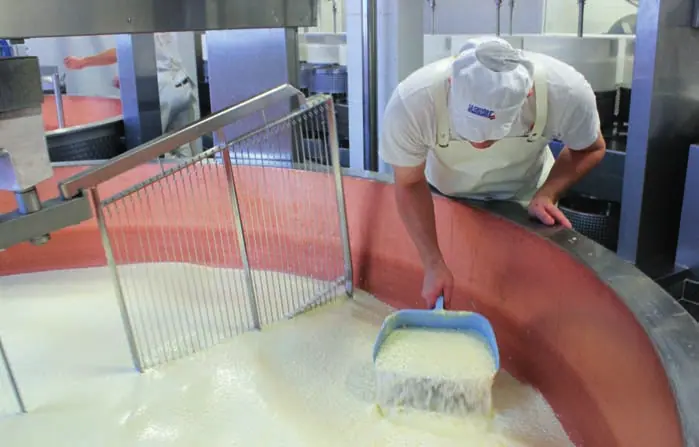
Interprofession du Gruyère (IPG)
Organisation interprofessionnelle fromagère
IT Valley (Cluster)
Cluster informatique
LC Logiciels et Conseils SA
Logiciels de gestion
MC-monitoring SA
Surveillance de machines tournantes

Polygone Architecture
PRODO SA
Bitumes et entretien des revêtements routiers
PWP SA
Composants pour véhicules utilitaires
Stadt Bern – Präsidialdirektion
Administration communale

Stadt Biel – Wirtschaft / Statistik
Administration communale
Stadt Solothurn – Stadtpräsidium
Administration communale
Transports publics fribourgeois (TPF) SA
Transports publics
TREUHAND|SUISSE – Schweizerischer Treuhänderverband
Association professionnelle des fiduciaires
Universität Bern
Université
Ville de Bulle
Administration communale
Ville de Fribourg
Administration communale
Volkswirtschaftsdirektion des Kantons Bern
Administration cantonale (économie publique)
Zurich Assurances – Agence générale Alexandre Ducrot
Assurances
Aucun résultat.